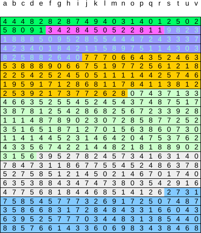
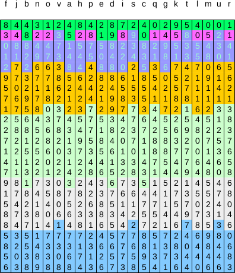
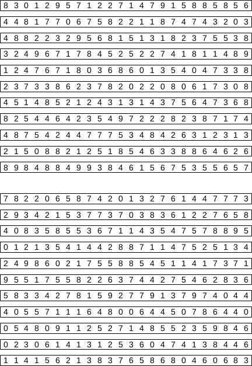
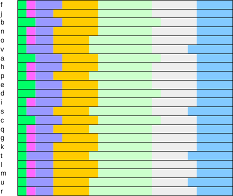

LXR - cryptographic data archive

How it works.
Posted on July 3, 2017
1
We create a buffer to hold the data temporarily.

2
The buffer is encrypted using AES in chain-block mode.

3
Columns are shuffeled randomly.

4
The buffer is rotated such that we can extract data from columns. The data in the column does not show the same locality as in a row.

5
The columns are saved to individual files. These files can be stored in different locations and on various online cloud services.

6
We keep the information of how to arrange the raw data so to reconstruct the original buffer. This is an extra key in addition to the AES key, which makes the encryption more effective.
